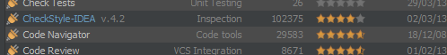
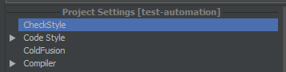
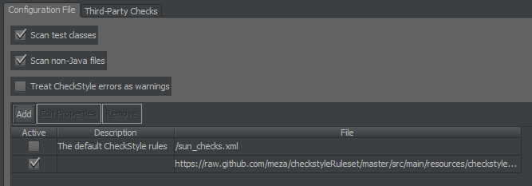
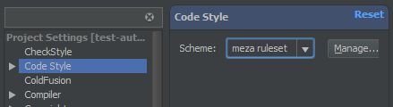
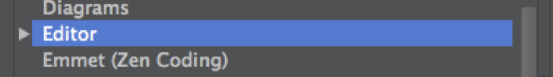
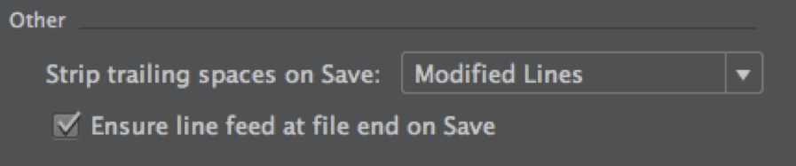

The style of the output should identify the team, not the individuals.
I have been working on various projects, where we introduced some sort of common coding standards. The buy in from the developers is usually low, and they get frustrated by the constraints. On a legacy codebase, introducing such rules usually results in thousands of violations from the start, which people have to work through. Not to mention when the build breaks because of a silly checkstyle mistake. To ease the pain, I usually provide an IDE setup with the rule set, so most of the fixes could happen magically, without even bothering the programmer. This results in less frustration, and only major violations, which indeed should break the build.
To use my pretty strict rule set, use
<build>
<plugins>
<plugin>
<groupId>org.apache.maven.plugins</groupId>
<artifactId>maven-checkstyle-plugin</artifactId>
<version>2.10</version>
<dependencies>
<dependency>
<groupId>hu.meza.tools</groupId>
<artifactId>checkstyle</artifactId>
<version>1.0</version>
</dependency>
</dependencies>
<configuration>
<configLocation>checkstyle.xml</configLocation>
<consoleOutput>true</consoleOutput>
</configuration>
<executions>
<execution>
<goals>
<goal>check</goal>
</goals>
<phase>verify</phase>
</execution>
</executions>
</plugin>
</plugins>
</build>
<reporting>
<plugins>
<plugin>
<groupId>org.apache.maven.plugins</groupId>
<artifactId>maven-checkstyle-plugin</artifactId>
<version>2.10</version>
<configuration>
<configLocation>checkstyle.xml</configLocation>
</configuration>
</plugin>
</plugins>
</reporting>
This will download the maven dependency, set the rules and run mvn checkstyle:check with the build.
IntelliJ IDEA Setup
- Download CheckStyle-IDEA plugin 
- Locate the settings of the plugin 
- Add the checkstyle.xml as a HTTP ruleset 
- Download the IntelliJ IDEA formatting file from: here, and place it under <user_home>/.IntellijIdea<version>/config/codestyles
- Restart IntelliJ
- Set the newly downloaded formatter to be active for your project 
- Select the editor pane 
- Set ensure line feed 